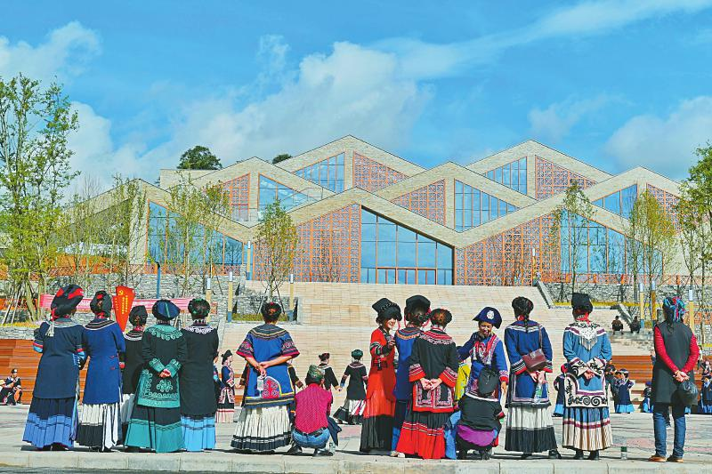
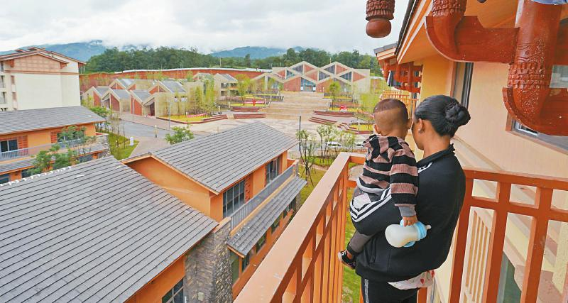

机构
机构 新闻
新闻 信息公开
信息公开 服务
服务 互动
互动 办公系统
办公系统

昭觉沐恩邸社区新居民在太阳广场跳舞。 （记者 华小峰 摄）

昭觉沐恩邸社区新居民眺望新居。 （记者 华小峰 摄）
“出门送孩子上幼儿园，找不到回来的路。”提起妻子阿勒干呷刚搬家时的“糗事”，某色日者忍不住笑了。阿勒干呷嘟囔一句：“谁让这里的房子都长得一样呢？”
今年5月12日，住在“悬崖村”——昭觉县支尔莫乡阿土列尔村牛觉组的某色日者一家，和其他27户村民一起搬到县城附近的沐恩邸社区。在这个川内最大的易地扶贫搬迁安置点，“悬崖村”人发现，搬进新家只是从村民变市民第一步。
“磨合，适应，融合，最终像城里人一样生活。”沐恩邸社区副书记海来木呷说，从贫困户到市民的转变，远不是搬到新房里这么简单。但是，几个月过去，“悬崖村”人“搬进新房子，过上好日子”却又那么真实。
新家和故土
从习惯买菜开始新生活，老家产业仍然没丢
“这次买了肉。”12月18日，刚进门，阿勒干呷就放下菜篮。在“悬崖村”时，平时吃肉全靠自己杀猪。也正是如此，前不久的彝族年，没及时买肉的阿勒干呷被丈夫数落：忘了已经不养猪了？
买菜，只是阿勒干呷适应新生活的一部分。刚搬到新家时，阿勒干呷懵了：熟悉的土灶没了，换成没用过的电磁炉、电饭煲；全新的液晶电视，却不知道怎么用遥控器……
“以前出过（搬迁户）不会用电饭煲挨饿的事情。”海来木呷说，社区在搬迁之初便对“悬崖村”搬迁户进行适应性培训，培训内容包括洗衣机使用等数十项。某色日者用手机拍下家电操作流程，“我老婆不会就看一下。”
女人们逐渐适应新家，男人们则陆续做起“候鸟”，奔波在相距两个小时车程的老家与新家之间。
“油橄榄冻着没有，游客多不多？”12月18日中午，某色日者拨通了族叔某色尔布的电话。同为“悬崖村”搬迁户，早在12月14日，某色尔布就赶回老家寻找柑橘销路。他告诉某色日者，要尽快回老家。因为油橄榄要做好保温，且寒假将至，游客人数会越来越多。
搬到沐恩邸社区，产业和收入渠道还是要围绕“悬崖村”做文章。某色日者在老家有10多亩油橄榄，而某色尔布则在老家有年产值两万多元的5亩多柑橘，以及开业近一年的农家乐。
“他们大部分在老家都有产业。”海来木呷说，对于脱贫不久的“悬崖村”28户搬迁户来说，老家的产业眼下仍然不能丢。
新朋与旧友
一边主动融入新社区，一边保留着“悬崖村”的印记
“舞蹈从晚上7点开始，大家尽量参加。”眼看社区广场舞台布置妥当，沐恩邸社区书记石一阿西发出通知。搬到沐恩邸社区开始，参加舞会，就是“悬崖村”女人们的“必修课”。
为何要组织舞会？“增强凝聚力，加快融入。”石一阿西解释，沐恩邸社区安置了全县81个村的搬迁户，和大伙打成一片是迁入者的必修课。
“刚来的时候，对门住的是谁都不知道。”某色尔布的妻子杨铝洗说，“悬崖村”搬迁户被分在不同的单元楼，处理邻里关系成为当务之急。而舞蹈等群众性娱乐活动，提供了相互熟悉的平台。
“有的和其他村的村民一起出去打工，有的一起办喜事。”海来木呷注意到，集体活动多起来后，“悬崖村”28户搬迁户在新家结识了不少新朋友。
但是，“悬崖村”的印记并没有抹去。搬家前，28户村民自发组建了名叫“阿土列尔村”的微信群。读过初中、曾长期在外务工的杨铝洗成了女人间的“话事人”。遇到跳舞这样的事情，也要听听杨铝洗的意见。而阿勒干呷朋友圈里的视频中，身边的舞伴都是杨铝洗。
“平时遇到事情，还是会想着老家人。”某色日者说，大伙如果有事出门，都要请附近的“悬崖村”老乡帮忙照看在家的孩子。
新俗和新风
老党员变社区志愿者，“孩子的教育”成热门话题
“不能丢垃圾。”看到有人把喝空的饮料瓶放在路边，64岁的老党员某色作格赶紧跑了过来。从“悬崖村”搬到沐恩邸社区不到一个月，某色作格就申请了新“工作”：承担社区28栋居民楼附近绿化带管护事宜。
“上任”近半年，某色作格不仅守住绿化带，也改变了自己的生活方式。“我不让几个小孩丢垃圾。他们问我‘那你为啥往地上吐痰’。”这件事让某色作格明白：想要做好管护工作，必须要从改变自己开始。从那以后，他和“悬崖村”的老伙计们约定，相互监督，做到“不聚众酗酒、不乱扔垃圾”。
老人在变，孩子们的命运同样在改写。“最头疼的事解决了。”12月18日中午，接完昭觉县特殊学校打来的电话后，某色日者冲着7岁的女儿笑了。因为，有听力和语言障碍的女儿不日即可入学。
不只是残障儿童，搬到沐恩邸社区后，“悬崖村”的娃娃们更“金贵”了。“每天都有人找我辅导作业。”被称为“文化人”的杨铝洗感受到了这种变化。她说，“悬崖村”成年人多数没有完成义务教育，在搬家前的几年，对孩子的教育大部分还停留在“早晨发一颗土豆，晚上清点下人头”阶段。但眼下，“孩子的学习成绩”却成了大人们的热门话题之一。
“搬到这里以后，教育、卫生等条件都变好了，大伙的精神面貌肯定会一点点改变的。”海来木呷说，他期待“悬崖村”的搬迁户们早日真正变成居民和市民。 （记者 王成栋 寇敏芳）